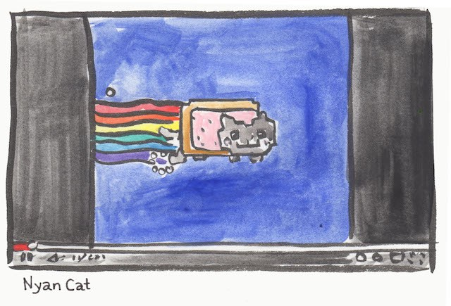

Data Vizualization
Data visualizations using d3.js that make data concise and meaningful.

Image drawn by Sophie Lucido Johnson for The Hairpin blog.
What makes a YouTube video go viral?
Growing up in the days of 'Charlie Bit My Finger' and 'Chocolate Rain' on replay during middle school lunchtime, the rise of influencers on YouTube felt like a natural transition into 21st century celebrities and advertisement. Putting some more thought into this, though, it's actually really weird. Why did these specific videos get so popular that they make up the essence of my generation's humor? Basically, I started to ponder the question of virtality - some formula that all viral videos follow that lead them to such widespread popularity. Not knowing how to even begin to answer this question that faced such a huge scope, I decided to look at some data.